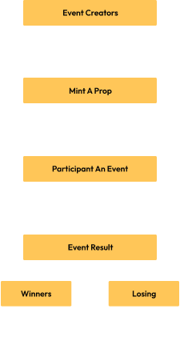

{{define "section-14"}}

<div id="token" class="container space-top-3">
  <div class="container-xl container-fluid space-md-2 px-0 px-md-12 px-lg-12">

 <div class="row justify-content-lg-between align-items-md-center"> 

    <div class="col-lg-6 mb-3 mb-lg-0 order-md-0 order-2">
      <div class="mb-3">
        <div class="content-6tN">
          <h3 class="karma-h">Liquidation Logic</h3>
          <br>
          <p class="karma-text-gray">1. After confirming the prediction outcomes, the losing side’s smart inscriptions are destroyed. The SUI tokens obtained from this are used to replenish the liquidation pool. </p>
          <ul class="new-dot">
            <li>95% of this pool is given o the winners</li>
            <li>2.5% goes to the person who started the prediction topic</li>
            <li>2.5% supports the $KART Foundation</li>
          </ul>
          <p class="karma-text-gray">2. Optionally, the topic initiator can decide against burning the smart inscriptions. In such cases, the liquidation process distributes the losing side’s smart inscriptions among the winners. </p>
        </div>
      </div>
     
    </div>

    <div class="col-lg-6 mb-3 mb-lg-0 order-md-0 order-1">
      <div class="position-relative section-3-bg">
        <div class="space-top-2 display-mobile"></div>
        
        <!-- End SVG Elements -->
      </div>
    </div>
  </div>
</div> 
    </div>


      
{{end}}